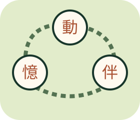

BRAIN & EVERYDAY LIFE
防失智
大挑戰
記憶、注意力、規則切換與生活知識，慢慢玩也很好。

練習腦力，也認識風險降低
12關不限時。這是原創娛樂與健康教育，不是失智篩檢或治療，不能保證預防失智。答錯、速度慢或高分，都不能判斷有沒有失智；患病也不是不夠努力。
記憶題先自由觀看，再親手蓋住回想；可重看但會標記為參考後練習。所有作答只留在本頁，重新整理清空。
本輪練習完成
這是題目作答紀錄，不是腦齡、認知能力或失智風險。選一件可行的小事帶走，例如約朋友聊天或安排適合的活動；不必以更多遊戲取代生活。
來源與求助
生活知識依據 WHO：Dementia（症狀、風險降低與照護），查核日2026-11-13。前4關是原創認知遊戲，不是經臨床驗證的量表。
記憶或思考的變化持續影響日常，可記下具體例子，向神經內科、精神科或家庭醫學科尋求評估。突然出現意識混亂、單側無力或說話不清，不要等遊戲結果，請立即尋求緊急協助（台灣119）。